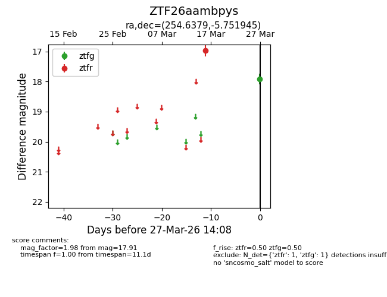
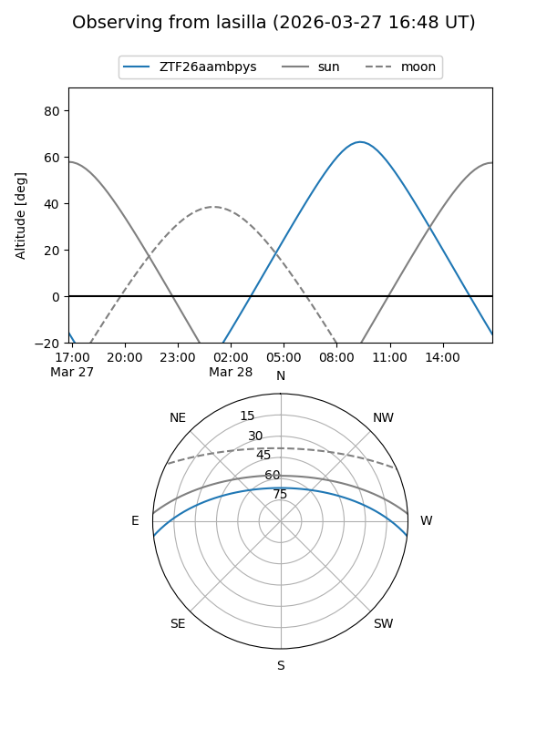
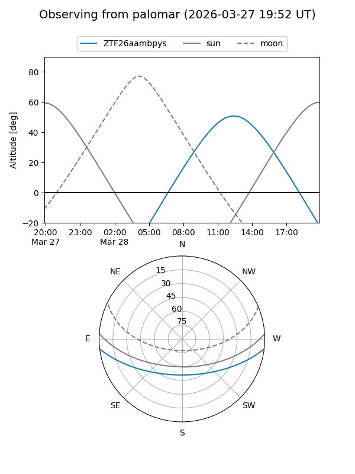

ZTF26aambpys
Target ZTF26aambpys at 2026-03-27 14:11
Aliases and brokers:
FINK: link
Lasair: link
ALeRCE: link
alt names
ZTF26aambpys (ztf,fink_ztf)
Coordinates:
equatorial (ra, dec) = 254.6379,-5.75195
equatorial (HMS+DMS) = 16:58:33.10,-05:45:07.00
galactic (l, b) = (13.8228,+21.90328)
Flags:
Photometry:
last ztfg=17.91, ztfr=16.97
1 ztfg, 1 ztfr detections
Lightcurve

Visibility


Additional plots